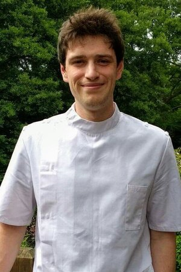

Wesley Connellan
Wesley qualified from the University College of Osteopathy in 2017. Previously he worked in a busy clinic in South-East England before moving up to Scotland. He uses a structural hands on approach to treat a wide variety of musculoskeletal presentations across all age groups. He also has a post-graduate qualification in animal osteopathy, and works with owners to treat horses and dogs across the country. In his spare time Wesley enjoys running and playing water polo.
Wesley qualified from the University College of Osteopathy in 2017. Previously he worked in a busy clinic in South-East England before moving up to Scotland. He uses a structural hands on approach to treat a wide variety of musculoskeletal presentations across all age groups. He also has a post-graduate qualification in animal osteopathy, and works with owners to treat horses and dogs across the country. In his spare time Wesley enjoys running and playing water polo.